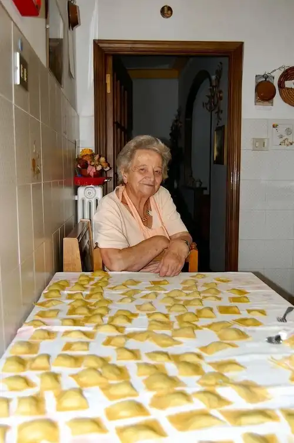
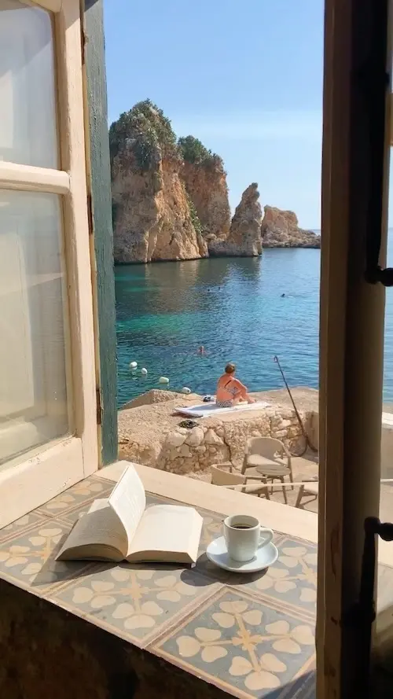
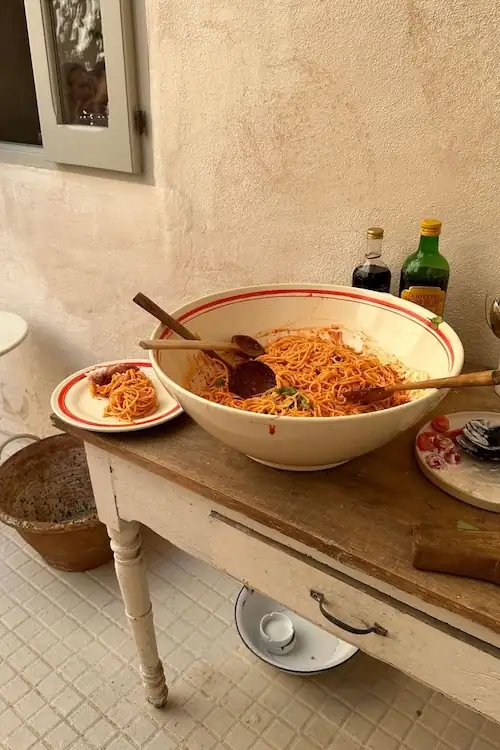
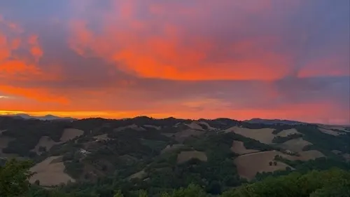

DIN LOKALE ITALIENSKE GUIDE




Autentiske oplevelser
Vi ønsker at inpirere, oplyse og fremkalde en rejselyst for de autentiske sider af Italien som indebærer så meget charme, originalitet og unik natur. Et land med en kultur der emmer af traditioner og særpræg. Vi håber på at kunne skabe en rejse, som skulle man opleve Italien gennem en Italiers øjne, nærmest mærke nostalgien på egen krop.

“Naturen med alle de smukke udsigter og min familie minder mig om Italien. Særligt også espresso, som er en del af den daglige rutine hos de fleste Italienere.“
Pietro, 27år